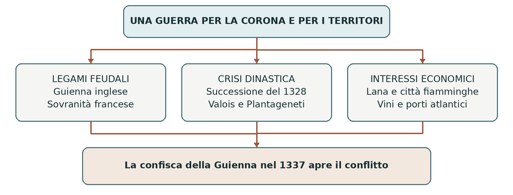
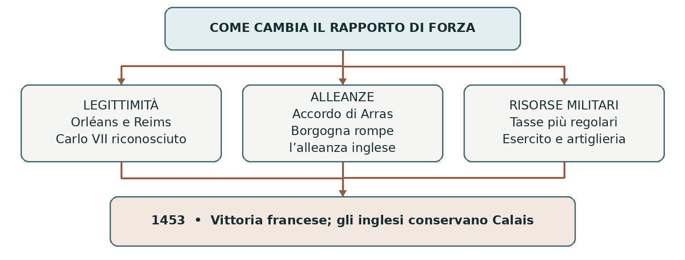

L’EUROPA ALLA FINE DEL MEDIOEVO
La guerra dei Cent’anni
Dinastie, società e trasformazione delle monarchie
Fra 1337 e 1453 i regni di Francia e d’Inghilterra si affrontarono in una lunga serie di guerre. I combattimenti, concentrati soprattutto in Francia, si alternarono a tregue e accordi. La denominazione “guerra dei Cent’anni” indica quindi un periodo di 116 anni, durante il quale cambiarono sovrani, alleanze e rapporti di forza.
0 Domanda generatrice
Come poté una contesa fra dinastie trasformare il potere dei re e il rapporto fra le popolazioni e il regno? All’inizio, il re inglese possedeva terre in Francia per le quali dipendeva dal sovrano francese. Alla fine, la monarchia francese aveva recuperato quasi tutti quei domini e rafforzato la propria organizzazione. Per capire questo passaggio dobbiamo seguire non solo le battaglie, ma anche tasse, conflitti sociali e scelte politiche.
In sintesi Il conflitto nacque dentro un ordine di rapporti feudali e contribuì a modificarlo. La vittoria francese fu il risultato di un processo lungo e incerto.
1 Il mondo precedente
Nel Trecento il regno di Francia comprendeva territori sottoposti a forme diverse di potere. La monarchia capetingia aveva ampliato il proprio dominio, ma grandi principi e signori conservavano autonomie, patrimoni e forze armate. Governare significava far riconoscere l’autorità regia, amministrare la giustizia e ottenere denaro e servizio militare.
Anche la monarchia inglese era legata al continente. Nel 1066 Guglielmo, duca di Normandia, aveva conquistato la corona d’Inghilterra. Le successive unioni dinastiche avevano aggiunto altri domini francesi. Tuttavia la Normandia continentale era stata perduta nel 1204: alla vigilia della guerra il problema principale riguardava la Guienna, parte dell’area aquitana nel sud-ovest della Francia.
Il re inglese era sovrano nel proprio regno e, per i feudi francesi, vassallo del re di Francia. Questo doppio ruolo alimentava contrasti: fino a che punto il sovrano francese poteva giudicare controversie e imporre decisioni in territori amministrati da un altro re?
In sintesi Il legame feudale non univa i due regni in uno Stato. Creava una dipendenza limitata a determinati possessi, sempre più difficile da conciliare con le ambizioni delle due monarchie.
2 Le fratture: successione e sovranità
La crisi dinastica del 1328
Dopo la morte di Filippo IV il Bello nel 1314, regnarono i suoi figli Luigi X, Filippo V e Carlo IV. Nel 1328, alla morte di Carlo IV senza un erede maschio sopravvissuto, si estinse la linea maschile diretta dei Capetingi. I Valois erano un ramo collaterale della stessa famiglia: il loro avvento non cancellò la continuità capetingia.
I grandi del regno riconobbero Filippo VI di Valois, cugino di Carlo IV. Edoardo III d’Inghilterra, invece, era figlio di Isabella, sorella di Carlo IV e figlia di Filippo il Bello. Poteva dunque rivendicare una parentela più prossima attraverso la madre. La disputa riguardava la possibilità di trasmettere il diritto alla corona per linea femminile.
Generazione | Ramo di Edoardo III | Ramo di Filippo VI |
|---|---|---|
Antenato comune | Filippo III l’Ardito | Filippo III l’Ardito |
Figli di Filippo III | Filippo IV il Bello | Carlo di Valois |
Generazione successiva | Isabella, figlia di Filippo IV, sposa Edoardo II d’Inghilterra. | Filippo VI, figlio di Carlo di Valois, diventa re nel 1328. |
Discendenza di Isabella | Edoardo III: nipote di Filippo IV attraverso la madre. | Filippo VI discende da Filippo III interamente per linea maschile. |
L’esclusione delle donne e della discendenza femminile fu poi giustificata richiamando la legge salica. Non va immaginata come l’applicazione automatica, nel 1328, di una norma successoria immutabile: la regola si consolidò attraverso precedenti, scelte politiche e successive elaborazioni giuridiche.
Dalla rivalità alla guerra
Edoardo inizialmente riconobbe Filippo e gli rese omaggio nel 1329. Nel 1337 Filippo VI dichiarò confiscata la Guienna: questo atto segnò l’apertura del conflitto. Edoardo riprese la rivendicazione dinastica e nel 1340 assunse pubblicamente il titolo di re di Francia. La successione era una questione reale, intrecciata alla contesa sui territori.
Contavano anche gli interessi delle Fiandre, ricca regione sul Mare del Nord. Le città produttrici di panni dipendevano dalla lana inglese, mentre il conte era legato alla monarchia francese. Il contrasto coinvolgeva quindi produzione, commerci e alleanze locali.
In sintesi La morte di Carlo IV aprì una crisi di legittimità; la confisca del 1337 trasformò le tensioni in guerra. Le motivazioni dinastiche e territoriali si rafforzavano a vicenda.
3 Attori, gruppi e conflitti
Soggetti | Interessi e risorse | Problemi e limiti |
|---|---|---|
Monarchia francese | Far riconoscere la propria sovranità e conservare la corona ai Valois. | Deve negoziare con principi, città e assemblee. |
Monarchia inglese | Difendere i domini continentali e rivendicare la corona francese. | Ha bisogno di denaro, alleati e collegamenti marittimi. |
Grandi signori | Proteggere patrimoni e influenza sul governo. | Le fedeltà possono cambiare secondo le convenienze. |
Città e mercanti | Tutela dei traffici, sicurezza e controllo sulle imposte. | Subiscono assedi e costi militari; hanno interessi diversi. |
Contadini e lavoratori | Conservare raccolti, redditi e diritti sulle proprie attività. | Pagano imposte e prelievi signorili e subiscono devastazioni. |
Combattenti e capitani | Servizio, salario, prestigio, bottino e riscatti. | Il mantenimento delle truppe dipende da risorse continue. |
Francia e Inghilterra non agirono come due comunità sempre compatte. Nobili francesi poterono sostenere il re inglese; città e regioni valutarono le alleanze in base ai propri interessi. Il duca di Borgogna, in particolare, ebbe un ruolo decisivo nella fase finale del conflitto.
Il denaro legava guerra e politica interna. Per finanziare le campagne, i sovrani si rivolgevano a istituzioni rappresentative: in Francia gli Stati generali, in Inghilterra il Parlamento. Queste assemblee rappresentavano ordini e gruppi privilegiati, non l’intera popolazione secondo il principio del suffragio moderno.

In sintesi La guerra dipese da coalizioni e risorse. Le sconfitte militari potevano far esplodere tensioni politiche e sociali già presenti nei regni.
4 Il processo storico: le prime vittorie inglesi
1337–1360: combattere, assediare, devastare
L’esercito inglese ottenne importanti successi. A Crécy, nel 1346, il coordinamento fra arcieri e uomini d’arme, la disposizione delle truppe e gli errori avversari contribuirono alla sconfitta francese. L’arco lungo era efficace nelle mani di combattenti addestrati, ma nessuna arma garantiva da sola la vittoria. La cavalleria continuò a svolgere funzioni importanti durante tutto il conflitto.
Nel 1347 gli inglesi conquistarono Calais, porto prezioso per i collegamenti attraverso la Manica. Nel 1356, a Poitiers, il figlio di Edoardo III, noto come Principe Nero, sconfisse e catturò Giovanni II il Buono, re di Francia. La prigionia del sovrano aggravò la crisi politica e finanziaria francese: il figlio Carlo, il futuro Carlo V, dovette assumere la guida del regno.
La guerra comprendeva molto più delle grandi battaglie. Le chevauchées, incursioni a cavallo nei territori nemici, distruggevano raccolti, villaggi e risorse per indebolire l’avversario e mettere in discussione la sua capacità di proteggere i sudditi. Gli assedi richiedevano tempo, viveri e denaro. Anche le tregue potevano lasciare sul territorio bande armate in cerca di sostentamento.
La pace di Brétigny del 1360
La Francia accettò condizioni pesanti. Gli accordi di Brétigny, poi ratificati a Calais, assegnavano al re inglese un’Aquitania molto ampliata e altri possessi, compresa Calais, e prevedevano un elevato riscatto per Giovanni II. La pace contemplava rinunce reciproche ai diritti di sovranità e alla rivendicazione della corona, ma la loro attuazione rimase controversa.
Da ricordare | Da distinguere |
|---|---|
Gli inglesi ampliarono soprattutto i domini nel sud-ovest. | Normandia e Angiò non furono ceduti all’Inghilterra nel 1360. |
Il re di Francia era stato catturato in battaglia. | La monarchia continuò a esistere, ma dovette affrontare una grave crisi. |
L’accordo interruppe una fase della guerra. | Non eliminò le cause della rivalità. |
In sintesi Le vittorie inglesi misero in difficoltà la monarchia francese senza distruggerla. Per capire la profondità della crisi occorre osservare che cosa accadde nelle città e nelle campagne.
Le società sotto pressione
La Francia del 1358: Parigi e le campagne
La prigionia di Giovanni II alimentò la contestazione del governo. A Parigi Étienne Marcel, prevosto dei mercanti, cercò di rafforzare il controllo degli Stati generali sulle finanze e sull’amministrazione. Nel 1357 il delfino Carlo dovette accettare un programma di riforme, ma il contrasto proseguì. La lotta coinvolse anche Carlo di Navarra e finì con l’uccisione di Marcel nel 1358.
Nello stesso anno scoppiò la jacquerie, una rivolta contadina nella Francia settentrionale. Devastazioni, prelievi e insicurezza alimentarono l’ostilità verso i nobili, accusati di non proteggere le popolazioni. Il movimento fu represso duramente da forze nobiliari, fra cui quelle di Carlo di Navarra. Il termine deriva da un soprannome sprezzante attribuito ai contadini, Jacques Bonhomme.
La mobilitazione parigina e quella rurale ebbero contatti, ma non costituirono un movimento unico con un identico programma. Per i mercanti era centrale il governo del regno; per molte comunità rurali la questione immediata era sopravvivere ai prelievi e alla violenza.
L’Inghilterra del 1381: tasse e rapporti sociali
Anche in Inghilterra la guerra pesava sulla popolazione. La Peste nera, giunta a metà del Trecento, aveva ridotto la manodopera; proprietari e autorità cercavano di contenere salari e mobilità dei lavoratori. Nel 1381 la riscossione di un’imposta personale, la poll tax, contribuì a scatenare una rivolta. Parteciparono contadini, artigiani e altri gruppi popolari, fra i cui esponenti vi furono Wat Tyler e il predicatore John Ball.
I ribelli raggiunsero Londra e chiesero la fine di pesanti vincoli personali e di abusi. Riccardo II negoziò inizialmente, poi il movimento fu represso e le concessioni revocate. Questa rivolta va distinta dal lollardismo, movimento religioso ispirato a John Wycliffe e critico verso aspetti della dottrina e della ricchezza ecclesiastica: i partecipanti al 1381 non erano semplicemente un esercito di lollardi.
La crisi della corona inglese nel 1399
Nel 1399 Enrico di Lancaster, sostenuto da importanti gruppi nobiliari, depose Riccardo II e divenne Enrico IV. Il Parlamento riconobbe il mutamento dinastico. La deposizione maturò nei conflitti fra re e aristocrazia: non fu la conseguenza immediata della rivolta del 1381, avvenuta diciotto anni prima.
In sintesi Guerra, tasse e rapporti sociali produssero tensioni diverse nei due regni. L’autorità monarchica poteva rafforzarsi, ma anche essere contestata e rovesciata.
La ripresa francese e il ritorno della crisi
1364–1380: Carlo V cambia strategia
Divenuto re nel 1364, Carlo V riorganizzò le risorse della monarchia. La guerra riprese nel 1369. Con il sostegno del comandante Bertrand du Guesclin, la corona privilegiò una riconquista graduale: assedi, recupero di piazzeforti e logoramento degli avversari, evitando quando possibile grandi scontri sfavorevoli.
Alla morte del re, nel 1380, gran parte dei territori perduti era stata recuperata. Gli inglesi conservarono però Calais e importanti posizioni, in particolare nell’area di Bordeaux e Bayonne. L’esito del conflitto restava aperto. Per orientarsi nello studio, questa ripresa e le successive tregue formano una seconda fase, dal 1360 al 1415, al cui interno le situazioni cambiarono più volte.
Carlo VI e la guerra civile
Il successore Carlo VI salì al trono ancora minorenne e dal 1392 soffrì di ricorrenti gravi crisi che ne limitarono la capacità di governare. I principi si contesero il controllo della corte. L’assassinio di Luigi d’Orléans nel 1407, voluto dal duca di Borgogna Giovanni senza Paura, aggravò lo scontro fra armagnacchi e borgognoni.
Erano coalizioni politiche e dinastiche con sostegni sociali diversi. Presentarle come il partito dei nobili contrapposto a quello del popolo sarebbe fuorviante. Le rivalità francesi offrirono al re inglese nuove opportunità di intervento.
1415–1429: da Azincourt alla doppia monarchia
Nel 1415 Enrico V d’Inghilterra riportò una grande vittoria ad Azincourt e negli anni successivi conquistò la Normandia. Nel 1419 l’uccisione di Giovanni senza Paura, durante un incontro con il delfino Carlo, spinse il nuovo duca Filippo il Buono a stringere l’alleanza con gli inglesi.
Il trattato di Troyes del 1420 riconobbe Enrico V come futuro successore di Carlo VI, escludendo il delfino. Enrico sposò Caterina, figlia del re francese. Nel 1422 morirono prima Enrico V e poi Carlo VI: il piccolo Enrico VI fu riconosciuto re dei due regni dalla coalizione anglo-borgognona. Il delfino rivendicò a sua volta il titolo di Carlo VII.
In sintesi La Francia si trovò divisa fra obbedienze rivali. Carlo VII conservava ampi territori soprattutto a sud della Loira, non soltanto poche città: disponeva ancora delle basi per continuare la guerra.
Giovanna d’Arco e la svolta del 1429
Dare fiducia alla causa di Carlo VII
Nel 1428 gli inglesi assediarono Orléans, città strategica sulla Loira. In questa situazione emerse Giovanna d’Arco, giovane di origine contadina proveniente da Domrémy. Giovanna affermava di ricevere una missione divina: soccorrere il regno e condurre Carlo VII alla consacrazione. Lo storico può documentare le sue dichiarazioni e i loro effetti, senza trasformare la fede della protagonista in una spiegazione soprannaturale degli eventi.
Dopo essere stata ricevuta da Carlo e sottoposta a esami, Giovanna ottenne sostegno e raggiunse l’esercito. La sua presenza diede slancio e fiducia ai combattenti. Partecipò alle operazioni insieme a capitani esperti: non condusse da sola l’intera guerra. Nel maggio 1429 l’assedio di Orléans fu spezzato e altre vittorie permisero di avanzare verso Reims.
Perché Reims era così importante
Il 17 luglio 1429 Carlo VII fu consacrato a Reims, sede tradizionale del rito monarchico francese. Si considerava re già dal 1422, ma la cerimonia rese più forte e visibile la sua legittimità di fronte ai sostenitori di Enrico VI. Un successo militare produsse quindi un risultato politico e religioso.
Cattura, processo e morte
La guerra proseguì fra successi, insuccessi e trattative. Nel 1430, presso Compiègne, Giovanna fu catturata da forze borgognone e consegnata agli inglesi dietro pagamento. Fu processata a Rouen da un tribunale ecclesiastico presieduto dal vescovo Pierre Cauchon, in un ambiente controllato dagli inglesi e fortemente ostile alla sua causa.
Condannata come eretica recidiva, fu arsa sul rogo il 30 maggio 1431. La condanna aveva un evidente significato politico: screditare la donna che aveva sostenuto la legittimità di Carlo VII. Nel 1456 un nuovo processo annullò la precedente sentenza.
1429 | 1430–1431 | Dopo Giovanna |
|---|---|---|
Orléans viene liberata e Carlo VII consacrato a Reims. | Cattura a Compiègne, processo e rogo a Rouen. | La guerra continua: serviranno alleanze e riforme per vincere. |
In sintesi Giovanna contribuì a una svolta militare e simbolica. La sua morte non unì improvvisamente tutti i francesi: la vittoria arrivò oltre vent’anni dopo, attraverso altre decisioni decisive.
La vittoria francese: 1435–1453
Arras: isolare l’avversario
Nel 1435, con l’accordo di Arras, Filippo il Buono di Borgogna si riconciliò con Carlo VII. Il re dovette concedere vantaggi al duca, ma ottenne la rottura dell’alleanza anglo-borgognona. Gli inglesi persero un sostegno decisivo sul continente. Nel 1436 Parigi tornò sotto l’autorità di Carlo VII.
Riorganizzare le risorse e le truppe
Carlo VII rese più stabile il finanziamento militare, anche attraverso un prelievo fiscale più regolare, e rafforzò il controllo sui combattenti. Nel 1445 furono organizzate le compagnie d’ordinanza, unità mantenute dalla monarchia in modo continuativo. La riforma aiutava a ridurre la dipendenza da contingenti temporanei e da bande poco controllabili.
L’artiglieria ebbe un peso crescente negli assedi e nelle campagne finali. Cannoni, polvere da sparo, trasporti e specialisti richiedevano investimenti e coordinamento. Il cambiamento militare era quindi collegato alla capacità del re di raccogliere denaro e organizzare uomini e materiali.

Il 1453 come data conclusiva
Fra 1449 e 1450 la monarchia francese recuperò la Normandia. Nel 1453, la vittoria di Castillon e la successiva ripresa di Bordeaux posero fine al dominio inglese nella Guienna. Sul continente gli inglesi conservarono Calais, perduta soltanto nel 1558.
Il 1453 è la data convenzionale della fine della guerra, anche se non fu firmato allora un trattato generale di pace e i re inglesi continuarono a rivendicare il titolo francese. Era però fallito il progetto di governare stabilmente entrambi i regni sotto la stessa dinastia.
In sintesi La vittoria combinò legittimità, diplomazia, risorse fiscali e organizzazione militare. Questi stessi strumenti avrebbero rafforzato il governo della monarchia.
5 Le fonti in dialogo: chi è il re legittimo?
Il trattato di Troyes e la lettera di Giovanna d’Arco sostengono soluzioni opposte per la corona francese. Sono documenti diversi per autore, destinatario e scopo. I loro contenuti sono qui presentati in parafrasi didattica, senza attribuire ai protagonisti parole inventate.
A Il trattato di Troyes, 1420
Provenienza e destinatari. Accordo fra Carlo VI ed Enrico V, sostenuto dalla coalizione anglo-borgognona. Si rivolge alle autorità e ai sudditi dei regni per stabilire pubblicamente i diritti dinastici.
Contenuto. Il testo collega la pace al matrimonio di Enrico con Caterina di Francia. Carlo VI mantiene la corona durante la propria vita; dopo la sua morte il regno spetterà a Enrico e ai suoi eredi. L’accordo presenta questa successione come la via per porre fine alle sofferenze del conflitto. [F1]
Interpretazione e limite. Il documento mostra il progetto politico dei contraenti. Non dimostra che tutti i francesi lo accettassero né che la successione potesse realizzarsi senza resistenze. La pace proclamata nel testo è un obiettivo dichiarato, non un risultato già raggiunto.
B Giovanna d’Arco agli inglesi, 1429
Provenienza e destinatari. Lettera dettata da Giovanna, datata 22 marzo 1429 e rivolta al re d’Inghilterra e ai comandanti inglesi. Il testo è tramandato in più copie e versioni, fra cui quella inserita negli atti del processo.
Contenuto. Giovanna chiede agli inglesi di abbandonare i territori occupati e l’assedio di Orléans. Afferma che Carlo è il vero erede del regno e fonda la propria missione sulla volontà divina. Presenta il ritiro come condizione della pace e minaccia l’intervento armato se la richiesta sarà respinta. [F2]
Interpretazione e limite. La lettera permette di comprendere come Giovanna unisca fede, appartenenza al regno e legittimità dinastica. Documenta le convinzioni e il messaggio della protagonista; non certifica l’origine divina della missione. Le varianti fra le copie invitano inoltre alla cautela quando si citano le sue parole.
Domanda | Trattato di Troyes | Lettera di Giovanna |
|---|---|---|
A chi spetta la corona? | A Enrico e ai suoi eredi dopo Carlo VI. | A Carlo, riconosciuto come vero erede. |
Come si giustifica la pace? | Con un accordo matrimoniale e successorio. | Con il ritiro inglese e il riconoscimento di Carlo. |
In sintesi La guerra si combatté anche attraverso argomenti di legittimità. Riti, accordi e parole influivano sulle fedeltà insieme alla forza degli eserciti.
6 Conseguenze e nuovo assetto
Una monarchia francese più organizzata
La Francia uscì dalla guerra con vaste aree devastate, ma con una monarchia capace di controllare più risorse militari e finanziarie. Un prelievo più regolare permetteva di mantenere truppe; truppe meglio organizzate aiutavano il re a imporre la propria autorità. Questo processo incontrava resistenze e lasciava in vita privilegi e autonomie locali.
Nel 1438, mentre la guerra era ancora in corso, Carlo VII aveva emanato la Prammatica Sanzione di Bourges. Essa limitava l’intervento papale nella Chiesa di Francia e valorizzava concili ed elezioni ecclesiastiche. Rafforzava la tutela regia sulle questioni religiose del regno, ma non creava una Chiesa separata dalla comunione cattolica.
Inghilterra e appartenenze collettive
In Inghilterra, il finanziamento della guerra aveva dato peso al Parlamento nel rapporto con la corona. Le sconfitte continentali aggravarono poi le tensioni dinastiche e aristocratiche che avrebbero contribuito alle guerre delle Due Rose, iniziate nel 1455. Queste ebbero anche cause proprie: non furono una conseguenza automatica della vittoria francese.
Il lungo confronto rafforzò il senso di appartenenza ai due regni e la distinzione fra francesi e inglesi. Tuttavia fedeltà locali e dinastiche rimasero forti. Parlare di “sentimento nazionale” può essere utile se non lo si confonde con il nazionalismo contemporaneo o con l’idea che tutta la popolazione pensasse e agisse allo stesso modo.
In sintesi Il conflitto favorì monarchie territorialmente più definite e meglio organizzate. Non produsse in un solo momento Stati centralizzati privi di limiti e opposizioni.
7 Conclusione
La contesa dinastica trasformò i regni perché una guerra tanto lunga richiedeva risorse stabili e un’autorità riconosciuta. I re dovettero costruire strumenti di finanziamento e di governo, stringere alleanze e giustificare il proprio diritto a comandare.
Sintesi finale. La dipendenza feudale del re inglese per i possessi francesi entrò in tensione con le ambizioni delle due corone. Le crisi dinastiche alimentarono il conflitto; tasse e devastazioni coinvolsero le società. La svolta francese dipese da Giovanna, dalla diplomazia e dalle riforme di Carlo VII. Nel 1453 il progetto anglo-francese era fallito e la monarchia francese disponeva di strumenti di governo più forti.
Coordinate e linea del tempo ragionata
Dove: soprattutto nel regno di Francia, con operazioni marittime e conseguenze politiche in Inghilterra. Quando: 1337–1453, dalla prima metà del XIV secolo all’inizio della seconda metà del XV. Le quattro fasi sono uno strumento di studio: non indicano combattimenti continui.
Date e fase | Snodo | Significato |
|---|---|---|
1328; 1337 | Ascesa di Filippo VI; confisca della Guienna. | La rivalità dinastica e feudale sfocia nella guerra. |
1337–1360 | Crécy 1346; Calais 1347; Poitiers 1356. | Le vittorie inglesi mettono in crisi la monarchia francese. |
1357–1358 | Riforme richieste da Marcel; jacquerie. | Città e campagne contestano governo e prelievi. |
1360 | Pace di Brétigny. | Ampliamento dei domini inglesi nel sud-ovest. |
1360–1415 | Carlo V re nel 1364; guerra ripresa nel 1369. | Riconquista francese, seguita da tregue e nuove crisi. |
1381; 1399 | Rivolta inglese; deposizione di Riccardo II. | Due crisi diverse, sociali e dinastiche. |
1407 | Assassinio di Luigi d’Orléans. | Si aggrava la lotta fra fazioni francesi. |
1415–1429 | Azincourt 1415; Troyes 1420; due re nel 1422. | Espansione inglese e divisione delle obbedienze. |
1429–1453 | Orléans e Reims nel 1429. | Carlo VII rafforza la propria legittimità. |
1431; 1435 | Morte di Giovanna; accordo di Arras. | La guerra prosegue e cambiano le alleanze. |
1438; 1445 | Bourges; compagnie d’ordinanza. | La corona amplia gli strumenti di governo. |
1450; 1453 | Recupero della Normandia; Castillon e Bordeaux. | La vittoria francese conclude il ciclo militare. |
Luoghi da collegare agli eventi
Guienna e Bordeaux: domini e traffici nel sud-ovest. Fiandre: città tessili sul Mare del Nord. Calais: collegamento con l’Inghilterra. Orléans: passaggio strategico sulla Loira. Reims: consacrazione regia. Rouen: processo e morte di Giovanna. Sull’atlante individua anche Parigi e la Normandia: il controllo di porti, fiumi e città aiuta a spiegare l’andamento della guerra.
Vocabolario e saperi irrinunciabili
Termine | Definizione per lo studio |
|---|---|
Vassallaggio / omaggio | Rapporto di dipendenza personale legato a un feudo; l’omaggio ne manifesta il riconoscimento. |
Sovranità / dinastia | Autorità superiore su un territorio; famiglia nella quale si trasmette il potere monarchico. |
Delfino | Titolo del principe ereditario del regno di Francia. |
Stati generali / Parlamento | Assemblee rappresentative di ordini e gruppi del regno; intervengono, con poteri diversi, anche sui finanziamenti. |
Jacquerie / poll tax | Rivolta contadina francese del 1358; imposta personale legata alla crisi inglese del 1381. |
Lollardi | Seguaci di un movimento religioso inglese ispirato a Wycliffe, distinto dalla rivolta del 1381. |
Armagnacchi / borgognoni | Coalizioni rivali che si contendono il governo del regno di Francia. |
Compagnie d’ordinanza | Unità militari francesi mantenute stabilmente dalla monarchia dal 1445. |
Dodici idee da saper spiegare
1. Il re inglese era vassallo del re francese soltanto per determinati possessi continentali.
2. La crisi dinastica del 1328 e la confisca della Guienna nel 1337 sono eventi distinti.
3. Edoardo III rivendicava la corona attraverso Isabella; Filippo VI per linea maschile.
4. Le Fiandre legavano la rivalità politica agli interessi della produzione tessile.
5. Crécy e Poitiers aprirono una grave crisi militare e politica in Francia.
6. Brétigny ampliò i domini inglesi in Aquitania, senza cedere Normandia e Angiò.
7. Le rivolte mostrarono il peso di guerra, fiscalità e rapporti sociali.
8. Carlo V recuperò territori, ma la guerra civile indebolì poi la Francia.
9. Troyes escluse il delfino dalla successione; Carlo VII continuò a rivendicare la corona.
10. Giovanna contribuì alla svolta di Orléans e alla consacrazione di Reims nel 1429.
11. Arras, fiscalità ed esercito furono decisivi per la vittoria del 1453.
12. Le monarchie e le appartenenze collettive si rafforzarono senza cancellare le autonomie.
Mappa di ripasso, attività e fonti
La mappa concettuale del capitolo
Nucleo | Collegamento da spiegare |
|---|---|
Problema di partenza | Un re sovrano in Inghilterra è vassallo per terre in Francia. |
Fratture e attori | Successione e confisca coinvolgono dinastie, principi, città e popolazioni. |
Processo | Vittorie inglesi, crisi sociali, ripresa francese, guerra civile e riscossa. |
Esito | La vittoria francese si lega a maggiore capacità fiscale e militare del re. |
Comprendere e argomentare
1. Spiega il doppio ruolo del re inglese e ricostruisci le parentele di Edoardo III e Filippo VI.
2. Distingui cause di fondo, crisi del 1328 e rottura del 1337. Inserisci gli interessi delle Fiandre.
3. Confronta la jacquerie del 1358 e la rivolta inglese del 1381: contesto, partecipanti e richieste.
4. Perché la guerra civile francese favorì Enrico V? Quale problema tentò di risolvere Troyes?
5. Confronta le fonti A e B: chi è il re legittimo e a quali condizioni si può avere pace?
6. Spiega in 12–15 righe perché Giovanna fu importante e perché la vittoria non dipese solo da lei.
7. Argomenta questa relazione: una guerra lunga richiede risorse e può trasformare il governo. Usa due esempi.
Fonti e riferimenti
Base della lezione: guerra dei Cento anni.ppt, 5 diapositive. Il testo sviluppa e corregge la traccia; la nota docente separata documenta gli interventi. Le fonti A e B sono parafrasate e distinte dal commento.
[F1] Trattato di Troyes (1420), capp. 1–3 e 6, in Antologia delle fonti bassomedievali, XVIII.3.G, a cura di S. Gasparri, A. Di Salvo e F. Simoni, Reti Medievali.
https://www.rm.unina.it/didattica/fonti/anto_bme/cap_XVIII/XVIII_3.htm
[F2] Giovanna d’Arco, lettera agli inglesi, 22 marzo 1429: versioni e traduzione a cura di Allen Williamson, Joan of Arc Archive.
https://archive.joan-of-arc.org/joanofarc_letter_Mar1429.html
[S1] Bibliothèque nationale de France, La guerre de Cent Ans, percorso Le livre de chasse / Gaston Phébus.
https://classes.bnf.fr/phebus/reperes/occ1.htm
[S2] Royal Armouries, The Hundred Years’ War 1337–1453: armi, campagne e contesto.
https://royalarmouries.org/objects-and-stories/stories/the-hundred-years-war-1337-1453
[S3] Reti Medievali, Antologia delle fonti bassomedievali, capitolo XVIII: documenti sul conflitto e sulle società.
https://www.rm.unina.it/didattica/fonti/anto_bme/cap_XVIII/XVIII_index.htm